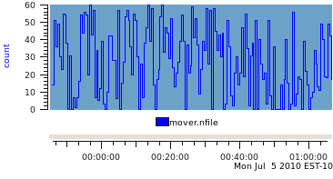
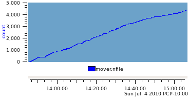
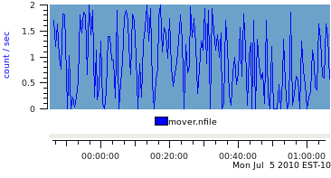
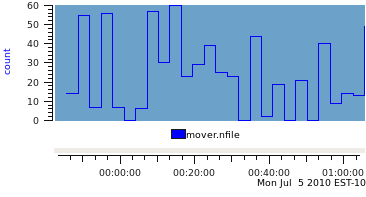
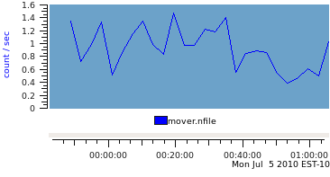

|
|
|
For most performance data processed by the Performance Co-Pilot (PCP), the information is gathered by domain-specific agents or Performance Metric Domain Agents (PMDAs). The data and metadata (describing the performance data) is then provided via the Performance Metric Co-ordinating Daemon (PMCD) directly to real-time PCP monitoring tools like pmchart, pmie, pmval, etc. or written to PCP archive files by pmlogger for subsequent retrospective analysis using these same PCP tools.
This document describes an alternative method of importing performance data into PCP by creating PCP archives from files or data streams that have no knowledge of PCP.
The services needed to build an import tool are included in the libpcp_import package and a Perl wrapper is provided in the PCP::LogImport module. The C and Perl APIs are effectively identical. Refer to the LOGIMPORT(3) manual page for an overview of these services. The examples in this document will be given in Perl.
Several import tools are already provided with PCP, namely:
| Tool | Function |
|---|---|
| sheet2pcp | Import data from a spreadsheet in CSV, OpenOffice or Microsoft Office format. |
| sar2pcp | Import data from the sadc (System Activity Reporting Collector) that is part of the sysstat package and modelled on the classical Unix sar tools. |
| iostat2pcp | Import data from output of the iostat command that is part of the sysstat package and modelled on the Berkeley Unix command of the same name. |
These scripts are all written in Perl, and we shall refer to them in this document to present examples of specific aspects of the LOGIMPORT services or the issues to be considered when building an import tool.
For the most part in this document we'll be developing an import tool for log files from a file migration application. Some sample log lines are shown below:
2010-07-04 13:46:29 14 files (6, 8, 0) 142512 bytes (92098) 2010-07-04 13:46:59 51 files (28, 23, 0) 132761 bytes (33239) 2010-07-04 13:47:29 36 files (23, 12, 1) 5733152 bytes (5688400) 2010-07-04 13:47:59 49 files (40, 9, 0) 118418 bytes (70669) 2010-07-04 13:48:29 30 files (7, 23, 0) 210531 bytes (52261) 2010-07-04 13:48:59 23 files (6, 17, 0) 81048 bytes (15175) 2010-07-04 13:49:29 55 files (31, 24, 0) 190841 bytes (27908) 2010-07-04 13:49:59 54 files (49, 5, 0) 14078 bytes (1213) 2010-07-04 13:50:29 38 files (19, 19, 0) 82398 bytes (16781) 2010-07-04 13:50:59 0 files (0, 0, 0) 0 bytes (0) 2010-07-04 13:51:29 31 files (8, 23, 0) 202755 bytes (41984) 2010-07-04 13:51:59 0 files (0, 0, 0) 0 bytes (0) 2010-07-04 13:52:29 7 files (4, 3, 0) 15954 bytes (8789) |
Each line begins with a date and time, then the count of the number of files migrated over the last time interval, then three counts in parenthesis corresponding to the number of small files (less than 1024 bytes), medium files (less than 1024*1024 bytes) and large (more than 1024*1024 bytes) files that were migrated, then the total number of bytes moved and finally the size (in bytes) of the largest file moved.
The input data stream needs to conform to some basic principles before we can consider importing information to PCP:
We shall return to timestamps and the associated matter of timezones a little later in this document.
Incremental development is encouraged. So we shall start with one metric being the number of files migrated.
The first task is to assign a name – the rules must conform to those for the Performance Metrics Name Space (PMNS), namely a number of components separated by periods "." with each component starting with an alphabetic followed by zero or more characters drawn from the alphabetics, digits and the underscore "_" character (see pmns(5) for more details). For our metrics we'll use the prefix mover. and so the first metric will be known as mover.nfile.
Next the metadata for each metric must be defined. This is basically the fields of a pmDesc data structure as defined in pmLookupDesc(3). The following table describes the information required, some of the options and the values chosen for mover.nfile.
| Metadata | Options | mover.nfile |
|---|---|---|
| Unique Performance Metric Identifier (PMID) | PM_ID_NULL for a default assignment, else use the pmid_build macro as described in pmiAddMetric(3). | PM_ID_NULL |
| (Data) Type | PM_TYPE_32 for a 32-bit integer, etc. See pmLookupDesc(3) for a full list and description. | PM_TYPE_U32 |
| Instance Domain (indom) | If there is only one value for the metric, then this should be PM_INDOM_NULL, else it should be a value constructed using the pmInDom_build macro, see pmiAddMetric(3). | PM_INDOM_NULL |
| Semantics | Defines how to interpret consecutive values. If the values are from a counter that is monotonically increasing, use PM_SEM_COUNTER. If there is no relationship between one observation and the next, use PM_SEM_INSTANT. As a special case, if the value is most unlikely to change over time (e.g. a configuration parameter), then use PM_SEM_DISCRETE. | PM_SEM_INSTANT |
| Units | The interpretation of values for each metric is defined by classifying the metric along three orthogonal axes, namely space, time and count (for events, messages, calls, packets, etc.). For each axis, we need to specify the dimension (0 for not appropriate, -1 if the value is "per unit" along this axis or 1 if the value is measured in units along this axis) and the scale (if the dimension is not zero) to define the absolute magnitude of values along this axis. Refer to pmLookupDesc(3) for a full list of the available options. Use a pmiUnits(3) constructor to build a units value. | pmiUnits(0,0,1,0,0,PM_COUNT_ONE) |
The basic algorithm follows this template:
For our sample file migration data, the following minimalist Perl script will do the job
use strict;
use warnings;
use Date::Parse;
use Date::Format;
use PCP::LogImport;
pmiStart("mover_v1", 0);
pmiAddMetric("mover.nfile",
PM_ID_NULL, PM_TYPE_U32, PM_INDOM_NULL,
PM_SEM_INSTANT, pmiUnits(0,0,1,0,0,PM_COUNT_ONE));
open(INFILE, "<mover.log");
while (<INFILE>) {
my @part;
chomp;
@part = split(/\s+/, $_);
pmiPutValue("mover.nfile", "", $part[2]);
pmiWrite(str2time($part[0] . "T" . $part[1], "UTC"), 0);
}
pmiEnd();
|
The resultant archive contains one metric.
$ pminfo -d -a mover_v1
mover.nfile
Data Type: 32-bit unsigned int InDom: PM_INDOM_NULL 0xffffffff
Semantics: instant Units: count
|
|
And when plotted with pmchart produces a graph like this ... |  |
|
The number of files migrated in this example could be exported as either the instantaneous value over the previous sample interval, or accumulated as a running total. If the running total is used and the semantics of the mover.nfile metric remains PM_SEM_INSTANT the resultant archive produces a graph like this ... which is not generally useful for analysis! |  |
|
So we change the data semantics to be PM_SEM_COUNTER and rely on the fact that most PCP monitoring tools will automatically rate convert counters before displaying them. This produces a very similar graph to the first one (the plot style is the only difference) when the output archive is replayed with the same sample interval as found in the input log file (30 seconds). |  |
|
The real difference in the choice of data semantics can seen when the sample interval for replay is longer than the sample interval in the PCP archive. Using a replay interval of 180 seconds (6 times the sample interval in the archive), produces the following graph for the PM_SEM_INSTANT data. |  |
|
And the PM_SEM_COUNTER data is displayed like this. |  |
For the PM_SEM_INSTANT metric, the only choice available to pmchart (and indeed any PCP reporting tool) is to use the most recent observed value at each reporting interval. In the example above, this means 5 data values from the archive are skipped and the 6th value is used for each reporting interval. By comparison, for a PM_SEM_COUNTER metric, all the reporting tools sample the metric at the start of the interval and at the end of the interval and then report the linearly interpolated rate over the interval, which includes the "history" of what was observed in each of the 6 archive intervals for each reporting interval.
This can be seen more clearly when the data is tabulated rather than plotted.
| Time | PM_SEM_INSTANT | PM_SEM_COUNTER | ||||
|---|---|---|---|---|---|---|
| 30sec samples | 180sec samples | 30sec samples | 180sec samples | |||
| files | files | files/sec | files | files/sec | files | |
| 23:58:59.000 | 34 | 1.133 | 34.0 | |||
| 23:59:29.000 | 5 | 0.167 | 5.0 | |||
| 23:59:59.000 | 12 | 0.400 | 12.0 | |||
| 00:00:29.000 | 39 | 1.300 | 39.0 | |||
| 00:00:59.000 | 3 | 0.100 | 3.0 | |||
| 00:01:29.000 | 0 | 0 | 0.000 | 0.0 | 0.517 | 93.0 |
| 00:01:59.000 | 10 | 0.333 | 10.0 | |||
| 00:02:29.000 | 42 | 1.400 | 42.0 | |||
| 00:02:59.000 | 42 | 1.400 | 42.0 | |||
| 00:03:29.000 | 28 | 0.933 | 28.0 | |||
| 00:03:59.000 | 28 | 0.933 | 28.0 | |||
| 00:04:29.000 | 6 | 6 | 0.200 | 6.0 | 0.867 | 156.0 |
| 00:04:59.000 | 57 | 1.900 | 57.0 | |||
| 00:05:29.000 | 0 | 0.000 | 0.0 | |||
| 00:05:59.000 | 15 | 0.500 | 15.0 | |||
| 00:06:29.000 | 27 | 0.900 | 27.0 | |||
| 00:06:59.000 | 53 | 1.767 | 53.0 | |||
| 00:07:29.000 | 57 | 57 | 1.900 | 57.0 | 1.16 | 209.0 |
Where the semantics of the data matches that of a free-running counter and where the total can easily be extracted from the input data source, it is always better to export PCP metrics with the semantics of PM_SEM_COUNTER. Note that the base value for a counter is arbitrary and zero works just fine.
Using similar arguments we can identify two additional singular metrics that can be extracted from the log as mover.nbyte (a free-running counter of the number of bytes migrated) and mover.max_file_size (an instantaneous metric reporting the size of the largest file migrated in the previous interval). With these additions, our minimalist Perl script has become ...
use strict;
use warnings;
use Date::Parse;
use Date::Format;
use PCP::LogImport;
my $nfile = 0;
my $nbyte = 0;
pmiStart("mover_v3", 0);
pmiAddMetric("mover.nfile",
PM_ID_NULL, PM_TYPE_U32, PM_INDOM_NULL,
PM_SEM_COUNTER, pmiUnits(0,0,1,0,0,PM_COUNT_ONE));
pmiAddMetric("mover.nbyte",
PM_ID_NULL, PM_TYPE_U64, PM_INDOM_NULL,
PM_SEM_COUNTER, pmiUnits(1,0,0,PM_SPACE_BYTE,0,0));
pmiAddMetric("mover.max_file_size",
PM_ID_NULL, PM_TYPE_U64, PM_INDOM_NULL,
PM_SEM_INSTANT, pmiUnits(1,0,0,PM_SPACE_BYTE,0,0));
open(INFILE, "<mover.log");
while (<INFILE>) {
my @part;
chomp;
s/[(),]//g; # remove all (, ) and ,
@part = split(/\s+/, $_);
$nfile += $part[2];
pmiPutValue("mover.nfile", "", $nfile);
$nbyte += $part[7];
pmiPutValue("mover.nbyte", "", $nbyte);
pmiPutValue("mover.max_file_size", "", $part[9]);
pmiWrite(str2time($part[0] . "T" . $part[1], "UTC"), 0);
}
pmiEnd();
|
This produces a PCP archive that can be plotted with pmchart to produce the following graph.

Metrics that have more than one value are supported in PCP through the concept of an Instance Domain (or indom) which is a set with an internal unique identifier (an integer) and a unique external name (a string) for each instance that may have an associated values. There can be many Instance Domains. And many metrics can be associated with the same Instance Domain.
The remaining metric in our example is mover.nfile_by_size which has the same metadata as mover.nfile except there is an associated Instance Domain to accommodate the 3 values ("<=1Kbyte", "<=1Mbyte" and ">1Mbyte"). The Instance Domain identifier is constructed using the pmInDom_build macro, and then used in calls to pmiAddInstance(3) to make the association for each metric-instance pair. The relevant metadata declarations are as follows:
my $sz_indom = pmInDom_build(PMI_DOMAIN, 0);
my @nfile_by_size = (0,0,0);
pmiAddMetric("mover.nfile_by_size",
PM_ID_NULL, PM_TYPE_U32, $sz_indom,
PM_SEM_COUNTER, pmiUnits(0,0,1,0,0,PM_COUNT_ONE));
pmiAddInstance($sz_indom, "<=1Kbyte", 0);
pmiAddInstance($sz_indom, "<=1Mbyte", 1);
pmiAddInstance($sz_indom, ">1Mbyte", 2);
|
And then in the loop, these additional calls to pmiPutValue(3) are required:
$nfile_by_size[0] += $part[4];
pmiPutValue("mover.nfile_by_size", "<=1Kbyte", $nfile_by_size[0]);
$nfile_by_size[1] += $part[5];
pmiPutValue("mover.nfile_by_size", "<=1Mbyte", $nfile_by_size[1]);
$nfile_by_size[2] += $part[6];
pmiPutValue("mover.nfile_by_size", ">1Mbyte", $nfile_by_size[2]);
|
This produces our final PCP archive that can be plotted with pmchart to produce the following graph.
If there is a lot of data and/or a lot of PCP metrics, the calls to pmiPutValue(3) in the inner loop of the import application may become expensive as a consequence of the repeated text-based lookup for a metric name and an instance name.
The LOGIMPORT(3) infrastructure provides a "handles" mechanism that may be used to improve efficiency. pmiGetHandle(3) may be used to obtain a "handle" for a metric-instance pair (once the metric and instance have been defined), then pmiPutValueHandle(3) may be used instead of pmiPutValue(3).
The interpretation of the timestamps in the output PCP archive is dependent on the timezone in which PCP believes the archive was created.
Since many import log files do not report the timezone, the LOGIMPORT(3) services assume a default timezone of UTC. An alternative timezone may be specified using pmiSetTimezone(3), but a corresponding adjustment needs to be made to the date and time conversions when arriving at the timestamp for each sample, e.g. using str2time() and/or ctime(). Unfortunately the format for the timezone offset is not handled the same in all places – for the ugly details, refer to the –Z command line processing and the do_label() procedure in the complete mover2pcp example code.
The Perl code we've been using thus far is minimalist and needs several extensions to make the application robust. Specifically these include:
The complete mover2pcp Perl script can be viewed here.
Copyright © 2007-2010 Aconex |